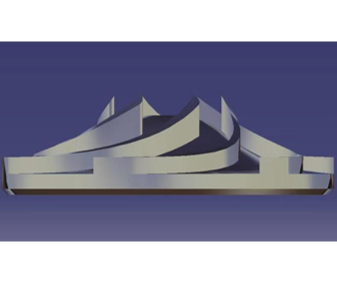

PW100G Impeller
Second Year Group Design Project - UCL Mechanical Engineering
Overview
- Designing and manufacturing an impeller for the Pratt & Whitney Canada PW100 turboprop engine that exhibits superior efficiency and performance.
- A scaled-down impeller was required to be 3D printed out of nylon, which was tested for its performance and then extrapolated to the performance of the real impeller.
- Objectives included incorporating environmentally friendlier manufacturing processes and materials at lower costs, alongside a more reliable impeller design requiring less maintenance and replacement.
- This was a year-long group project, delivering the prototype impeller, dissertation and multiple presentations.
My contributions
- Constraints for the prototype impeller design included:
- Pump casing, assembly and mount dimensions within provided specifications (see right →)
- Impeller operating speed of 2900rpm, with required pressure rise of 0.8 bar
- Number of impeller blades to be between 5 and 10
- Heights from 0.004-0.02m for inlet blades, and from 0.004-0.08m for outlet blades
- Volute spiral angle of 5.3°, outflow misalignment angle of up to ±1.5°
- To create my individual design, I employed analytical calculations to create a mathematical model using MATLAB: tweaking inlet and outlet blade numbers, angles and heights [within constraints] to minimise inlet blockage factor and outflow misalignment.
- I then 3D modelled the analytically best variations, utilising computational fluid dynamics simulations in ANSYS Fluent to compare their performances. Given the Nylon 3D printing material, tolerances of ±0.3mm were factored into the models along with casing clearance of 0.1mm.
- In selecting the material for the full-size impeller; PW100 datasheets contained operating rpms, take-off and working temperature ranges that the impeller would experience, providing required melting point and corrosion-resistance metrics.
- Materials with further favourable indices such as (stiffness, fracture toughness, yield strength and fatigue strength) / density were filtered for and evaluated in CES Edupack
- The final eight materials were evaluated in a decision matrix regarding carbon footprints and emissions, leading to AISI 302 Stainless Steel HT grade D as the selection.
- In selecting the manufacturing process: the volume of the real PW100 impeller was interpolated from datasheets and compared to the prototype impeller, determining a scaling ratio of 714.
- This estimated the PW100 impeller mass at 75kg, with upper-bound tolerances of 1mm. An economic batch size range of 370±185 was inferred from PW100 sales figures, and minimum material utilisation fraction was set to 0.75-0.85.
- These manufacturing restrictions were applied to CES, and the three remaining processes were evaluated in a decision matrix to arrive at ceramic mold casting as the most enviromentally friendly manufacturing process for the steel impeller.

Results
- The impeller design was refined with group members through decision matrices, to arrive at the final 6-blade design:
- It was then 3D printed and tested: exhibiting an efficiency of 29.71%. This scored in the top half of the cohort whilst having a lower blade number of 6, delivering an appealing blend of reliability and performance.
- Life Cycle Analysis carried out on CES Eco Audit showed the material + manufacturing footprints of the impeller to only sum to 0.5% of total engine operation footprint. Additionally, it was demonstrated that the component is able to be recycled infinitely.
- The final presentation was very well received by the panel, and the project received a high first-class [79%].

